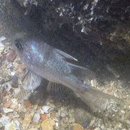
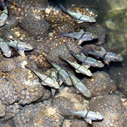

|
|
| fishes text index | photo index |
| Phylum Chordata > Subphylum Vertebrate > fishes > Family Apogonidae |
| Orbicular
cardinalfish Sphaeramia orbicularis* Family Apogonidae updated Sep 2020 Where seen? This small pretty fish is sometimes seen on our Southern shores, near living reefs. It's fast-moving so it's sometimes difficult to spot. Elsewhere, they are found in shallow sheltered waters in mangroves, reefs as well as near man-made structures. Features: To over 11cm, those seen usually about 6cm. Body rounded with fins that are all rounded, including the tail fins. Dark brown bar across the middle from the start of the spiny dorsal fin to just in front of the anus. Dark round spots on the back half of the body. Pectoral fins colourfully marked in a yellow-brown pattern. Seen alone or in small groups. |
 Pulau Hantu, Aug 04 |
| Cardinal babies: As with
many other cardinalfishes, the male incubates the eggs. According
to FishBase,
he does this for 8 days. What does it eat? According to FishBase, it feeds mainly on planktonic crustaceans, feeding at night in the evening and just before daybreak. Although there was one observation of one Orbicular cardinalfish "snapping up Tropical silversides using its tongue and rapidly swallowing the prey whole (like a frog eating a fly)." Human uses: It is popular in the live aquarium trade. |
*Species are difficult to positively identify without close examination.
On this website, they are grouped by external features for convenience of display.
| Orbicular cardinalfishes on Singapore shores |
On wildsingapore
flickr
|
| Other sightings on Singapore shores |
 Sentosa Serapong, Jul 25 Photo shared by Tammy Lim on facebook. |
 Pulau Hantu, Jun 24 Shared by Loh Kok Sheng on facebook. |
Links
|